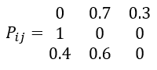
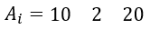
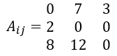
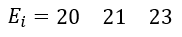
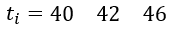

Programmas pabeigšanas laika noteikšanai modelis izmanto priekš programmatūrai kurai piemīt modulitāte. Tas nozīme kā sistēmu ir iespējams sadalīt pēc moduļiem, kuri var būt saistīti starp sēvi vai būt neatkarīgi. Izmaiņas vienā sistēmas moduli var izraisīt izmaiņas arī citos moduļos. Izmantojot formulu zēmāk ir iespējams noteikt cik daudz izmaniņas izraisīs izmaiņas viena moduli un cik daudz laika būs noterēts priekš katra moduļa labošanai.

kur:
Lai izmantotu šo formūlu nepieciešams izveidot kvadratīsko matricu, kuras izmērs būs vienāds ar sistēmas moduļu skaitu. Matricā jāievada varbūtības kā j modulis izraisīs izmaniņas i moduli. Matricas galvenai diagonālei jābūt aizpildītai ar 0. Vienas rindas varbutības summai jābūt vienāds ar 1. Pēc tam jaizveido vektoru kuras izmērs ir vienāds ar sistēmas moduļu skaitu. Vektora jāievada cik daudz sakuma izmaiņas būs i moduļī. Pēc tam jānoteic cik daudz laiku būs noterēts priekš vienai izmaiņai modulī. Izmantojot šo informāciju ir iespējams apreķināt kopējo izmaiņas skaitu katrā modulī un cik daudz laika būs nepieciešams priekš kļūdas labošanai i modulī. Apskatīsim risinājumu uz piemēra:
Mums ir matrica Pij
Mums ir vektors Ai
Lai noteiktu cik daudz izmaiņas būs katrā i modulī atkarība no j moduli, katru matricas rindas elementu, janoreizina ar vektora elementu. Tas izskatīsies sekojoši, mēs reizinām pirmo matricas rindu ar pirmo elementu no vektora, otro ar otro u.t.t. Rezultātā mēs sanemam jauno matricu Aij kurā noradīts cik daudz izmaiņas būs katrā i modulī atkarība no j moduli.
Tagad lai noteikt kopejo izmaniņu skaitu jāapreķina matricas Aij kolonas summu un pieskaitīt katra moduļa sakuma izmaiņu skaitu. Rezultāta saņemsim izmaņas skaitu katra i modulī.
Kad tiek aprekināts kopejais izmaiņu skaits, reizinām katra i moduļa izmaiņu skaitu ar t0, kas bus vienas ar 2 un saņemam cik daudz laika būs nepieciešams priekš izmaiņam katrā modulī.
